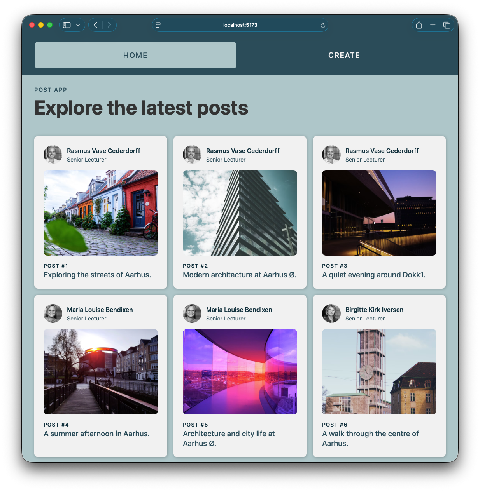
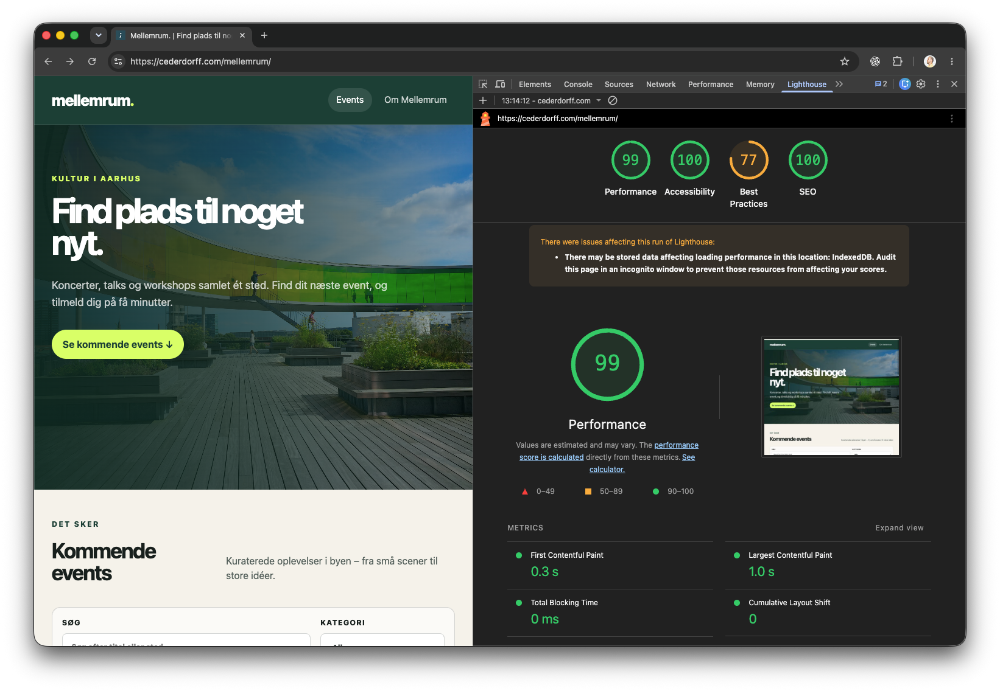
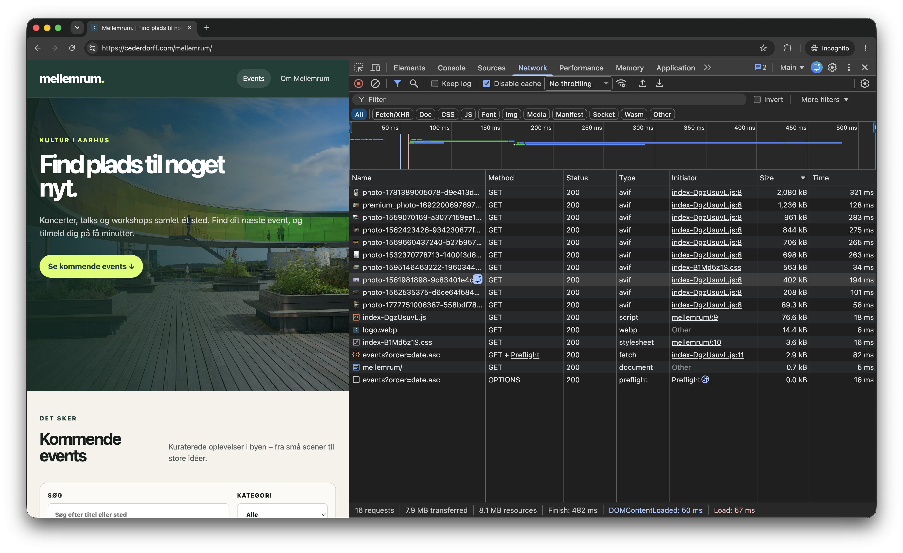

01Vælg userved oprettelse — og tilsvarende ved redigering

02Vis relationenpost.user bruges på post-kortet
Kort demonstration
Kan vi følge relationen gennem hele flowet?
FormUser kan vælgesved både oprettelse og redigeringRequestuserId sendeskontrollér payload i NetworkDatabaseRelationen holderposts.userId → users.idResponseUser er indlejretog vises på post-cardet
Hvor i flowet ville I først lede, hvis den forkerte user blev vist?
Agenda · konkrete forbedringsspor
Brug værktøjernes output til at vælge det rigtige greb
Beskriv momentet: Hvad prøver brugeren at gøre — og hvad oplever personen?
Tre brugerøjeblikke
Performance viser sig som ventetid, hop eller manglende respons
01IndlæsningHvornår kan jeg se det vigtigste?fx eventtitel, dato og hero-billede02StabilitetBliver indholdet stående?eller flytter layoutet sig, når assets ankommer?03Respons · INPKan jeg mærke mit klik?Reagerer UI straks med loading eller disabled — også mens requestet fortsætter?
Er Lighthouse det rigtige værktøj?
Ja — til baseline og hypoteser. Nej — som eneste bevis.
LighthouseHvad bør vi undersøge?gentagelig lab-test og mulige problemer→NetworkHvad bliver faktisk hentet?størrelse, timing, type, status og gentagelser→BrugerflowHar det betydning?observer appen under realistiske forhold
Lighthouse er en kontrolleret lab-test. Den viser ikke nødvendigvis det, alle virkelige brugere oplever.
Det vigtigste filterHvis vi ikke kan forklare betydningen for brugeren, har vi endnu ikke et prioriteret problem.
Baseline på deployment
Test den deployede løsning — og kør mere end én gang
Brug deployment-URL’endet er miljøet, brugeren møder
Lav en liste over sider og flowstest hele løsningen — ikke kun forsiden
Vælg samme device og throttlingfx Lighthouse Mobile
Kør 3 gangenotér et repræsentativt resultat og variationen
Sammenlign ikkelocalhost før↔deployment efterDet er to forskellige miljøer.
Testdækning · ikke kun forsiden
Hver side kan have sin egen performanceflaskehals
/Forsideførste load, hero og globale assets/eventsEventlistemange billeder, elementer og Supabase-data/events/:idEventdetaljestort indholdsbillede og relationelle datatilmeldingsflowInteraktionrequests, loading, success og fejl
LighthouseKør på hver central sidetype under samme forhold.
NetworkGennemfør også flows — requests opstår efter navigation og klik.
Test mindst én gang på hver side/route. Har I mange ens detaljesider, så vælg repræsentative eksempler.
Mellemrum · Lighthouse i DevTools
En score på 99 er et startpunkt

Hvad kan vi konkludere?
Se score, metrics og advarsler — og undersøg derefter requests og brugerflow.
Mellemrum · første Lighthouse-run
Jeres spørgsmålHvad skal vi se i Network, før vi foreslår et greb?
Desktop · deployment · én måling · 1. september 2026
To forskellige testvalg
Inkognito og Disable cache løser ikke det samme
InkognitoGiver et renere testmiljø
Reducerer påvirkning fra extensions og eksisterende IndexedDB-/browserdata.
Disable cacheSimulerer bedre et første besøg
Tvinger requests forbi browserens cache, mens DevTools er åbent.
God cold-cache-baselineInkognito + DevTools åbent + Disable cache slået til
Kør derefter et separat warm-cache-run med Disable cache slået fra.
Læs rapporten som spor
Gå fra måling til årsag og betydning for brugeren
Signal7,7 MiB overførten måling — endnu ikke årsagen→RequestÉt billede er 2,0 MiBfind det samme i Network→Kontekst2400 × 1795 pxvist omkring 323 × 575 px i testen→SpørgsmålKan færre bytes mærkes?afprøv før I vælger løsningen
02Undersøg årsagen
Network gør problemet konkret
Hvad hentes? Hvornår? Hvor meget? Hvor mange gange?
Mellemrum · Network med Disable cache
7,9 MB bliver til konkrete requests

WaterfallHvornår starter requestet?InitiatorHvad startede det?LCP-spørgsmåletBliver det vigtigste billede opdaget sent?Mellemrum · requests fra Lighthouse-run
Sortér efter størrelse — hvad skiller sig ud?
NameTypeSizeKildeSpørgsmål
photo-178…img2,0 MiBUnsplashhvor og hvor stort vises det?
Stort eller sent assetNetworkdimension, format, waterfall og cacheGentagne eller brede dataNetwork + koderequest URL, response og effectLangsomt klik eller animationPerformancerecord kun det konkrete flowMistænkt React-renderingReact Profilerbrug production-lignende data
03Forbedringsspor · billeder og assets
Start med de bytes, brugeren skal hente
Network viser, hvilke billeder, fonte og filer der er værd at undersøge.
URLHvilke parametre påvirker leverancen?LayoutSkal samme størrelse bruges på liste og detalje?TimingHvilke billeder er nødvendige i første viewport?
Vælg ét greb, forudsig effekten — og mål samme route igen.
Billeder og assets · se på hele projektet
Sortér efter størrelse — og spørg hvorfor filen er med
IndholdsbillederBrug image-CDN
Anmod om den dimension og kvalitet, den aktuelle visning har brug for.
Img → Size → PreviewLogoer og UI-assetsOptimér lokalt
Komprimér faste filer, og undgå flere næsten identiske versioner.
Img / Media → SizeFonteBegræns varianter
Hent kun de familier og vægte, designet faktisk anvender.
Font → Size → InitiatorDependenciesUndersøg før du fjerner
Reagér kun, hvis JavaScript-outputtet viser en relevant stor eller ubrugt dependency.
JS → Size → Initiator
Output først: filnavn · type · størrelse · hvornår den bliver hentet.
04Forbedringsspor · Supabase
Hent mindre data med et tydeligt formål
Response og request URL viser, om visningen henter mere end den bruger.
2,8 KiB
én succesfuld fetch i dette Lighthouse-run
ResponseHvilke felter og rækker indeholder den?Andre routesEr payloaden større på detalje- eller admin-sider?PrioriteringEr dette vigtigere end de største requests?
05Forbedringsspor · JavaScript og React
Optimér et konkret load eller en interaktion
Se først efter gentagne requests, manglende feedback og unødvendigt JavaScript.
Greb 3 · requests og React
Derfor kan dev mode vise to requests
Lokalt · development2 × GET /eventsStrict Mode kører Effects en ekstra gang for at afsløre problemer
→
Deployet · productionTypisk 1 × GET /eventsdet ekstra development-tjek kører ikke i production
Se først, om det dobbelte request kun findes lokalt.
Test Network på den deployede version, før du optimerer.
Sker det også dér? Undersøg dependencies og flere fetch-steder.
Greb 4 · JavaScript
Lazy-load PostDetailPage — hvis første bundle er problemet
lazy()venter med at hente sidens JavaScript, til routen skal vises
Suspenseviser en fallback, mens komponentens kode bliver hentet
Tradeoffmindre første bundle — men et ekstra load, når detaljesiden åbnes første gang
Brug det kun, hvis første JS-load er et dokumenteret problem.
Prioritér før du koder
Vælg det fund, der både kan mærkes og forklares
Stor bruger-konsekvens ↑
Stærkt bevis →
Arbejd nuKonkret flow + tydeligt fundfx langsom eventliste pga. store billederUndersøgSignal uden årsagfx en svingende scoreParkérLav konsekvensselv hvis værktøjet foreslår det
06Arbejd videre med Case 1
Ét begrundet skridt er nok til at lære noget
Du må vælge et performancefund — eller en vigtigere forbedring fra din audit.
Arbejdsgang
Dokumentér før, ændring og efter
01Vælg testdækningAlle centrale routes og flows — ikke kun forsiden02Etablér baselineSamme deployede URL, mode og testforhold03Find årsagLighthouse → Network → kode04Lav ét grebi en tydeligt navngivet feature branch05Mål igensamme forhold — og vurder forskellen
Din audit skal kunne svare
Problem · evidens · valg · resultat · næste skridt
Et gyldigt resultat
“Vi fandt ikke et væsentligt performanceproblem”
På eventlisten testede vi deployment tre gange med Lighthouse Mobile. Vi undersøgte de største requests i
Network og fandt ingen flaskehals med tydelig betydning for brugerflowet. Derfor prioriterer vi nu
fejlhåndtering ved tilmelding.
En begrundet prioritering er bedre end en tilfældig optimering mod 100.
Dagens centrale pointe
En score starter samtalen. Et brugerproblem styrer arbejdet.
Flow→Baseline→Bevis→Ét greb→Ny måling
Arbejd videre dér, hvor din audit peger på den største forskel.